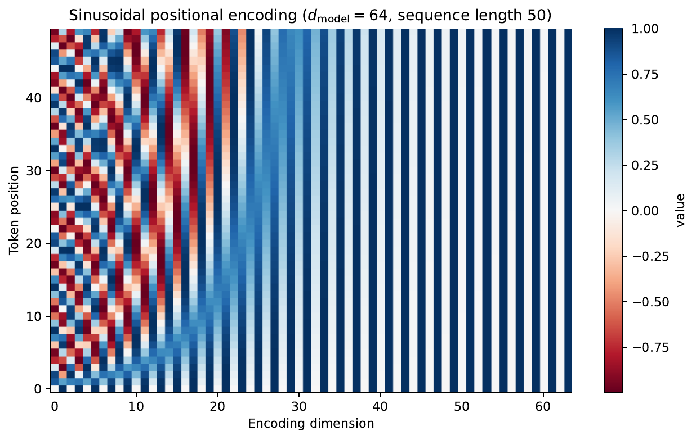

Before writing any NLP code, count what you're paying for. One 10-K can wipe your monthly budget if you send it naively.
import tiktoken
from pathlib import Path
# Load a 10-K text (SEC EDGAR full-text submission)
text_10k = Path("data/AAPL_10K_2023.txt").read_text()
enc = tiktoken.encoding_for_model("gpt-4o")
tokens = enc.encode(text_10k)
print(f"Tokens: {len(tokens):,}")
print(f"Characters: {len(text_10k):,}")
print(f"Ratio: {len(text_10k)/len(tokens):.2f} chars/token")
# Estimate cost
INPUT_PRICE = 5.00 / 1_000_000 # USD / token (GPT-4o)
OUTPUT_PRICE = 15.00 / 1_000_000
n_questions = 10
avg_out = 200
total = len(tokens) * INPUT_PRICE + n_questions * avg_out * OUTPUT_PRICE
print(f"Estimated cost for {n_questions} Q&A: ${total:.4f}")
GPT-4o supports 128K tokens. A 10-K plus a detailed prompt can exceed that. Try the three standard mitigations and measure how much content you retain.
def truncate(tokens, limit=127_000):
"""Keep only the first `limit` tokens — simple but loses the end."""
return tokens[:limit]
def chunk(tokens, size=500, overlap=50):
"""Overlapping windows — nothing lost, but needs multi-call aggregation."""
return [tokens[i:i+size] for i in range(0, len(tokens), size-overlap)]
def section_extract(text, keywords=("Risk Factors","MD&A","Results")):
"""Pull only high-value sections — smart but requires a section parser."""
...
print(f"Truncated tokens: {len(truncate(tokens)):,}")
chunks = chunk(tokens)
print(f"Chunks (500-50): {len(chunks)} windows")

gen_positional_encoding.py (deterministic).Visualise which tokens a model pays attention to — on a real financial sentence — to build intuition for multi-head attention.
from transformers import BertTokenizer, BertModel
import torch, matplotlib.pyplot as plt
tok = BertTokenizer.from_pretrained("bert-base-uncased")
model = BertModel.from_pretrained("bert-base-uncased",
output_attentions=True)
sentence = ("Revenue increased 12% year-over-year to $4.2 billion, "
"driven by strong demand in cloud services.")
inp = tok(sentence, return_tensors="pt")
with torch.no_grad():
out = model(**inp)
attn = out.attentions[-1][0] # (heads, seq, seq)
tokens = tok.convert_ids_to_tokens(inp["input_ids"][0])
for head in range(12):
plt.figure(figsize=(8,6))
plt.imshow(attn[head].numpy(), cmap="Blues")
plt.xticks(range(len(tokens)), tokens, rotation=90, fontsize=7)
plt.yticks(range(len(tokens)), tokens, fontsize=7)
plt.title(f"Layer 12, Head {head}")
plt.tight_layout()
plt.savefig(f"attn_head_{head}.png")
Without constrained output, a model might write "Revenue was approximately USD 4.2B" — unparseable by a database. A Pydantic schema and tool use forces it to emit a machine-readable object every time.
from pydantic import BaseModel
from typing import Optional
import anthropic
class EarningsReport(BaseModel):
company: str
period: str # e.g. "Q3 2023"
revenue_bn: Optional[float] = None # USD billions
net_income_bn: Optional[float] = None
eps: Optional[float] = None # diluted
guidance_revenue_bn: Optional[float] = None
sentiment: Optional[str] = None # "beat" | "miss" | "in-line"
client = anthropic.Anthropic()
response = client.messages.create(
model="claude-3-5-haiku-latest",
max_tokens=512,
tools=[{"name": "record_earnings",
"description": "Record structured earnings data",
"input_schema": EarningsReport.model_json_schema()}],
tool_choice={"type": "tool", "name": "record_earnings"},
messages=[{"role": "user", "content": TRANSCRIPT_SNIPPET}]
)
result = EarningsReport(**response.content[0].input)
print(result.model_dump())
tool_choice, the model may respond in free text when uncertain.
With it, the response must be the named tool call — always parseable.
Run these validation checks after every extraction call — constrained decoding guarantees shape, not values.
def validate_extraction(result, source_text: str) -> list[str]:
import re
issues = []
nums = [float(n) for n in re.findall(r"\d+\.\d+", source_text)]
# 1. Numerically wrong-but-valid
if result.revenue_bn and not any(abs(n - result.revenue_bn) < 0.1
for n in nums):
issues.append("revenue_bn not found in source text")
# 2. Silent field omission
for field in ("revenue_bn", "net_income_bn", "eps"):
if getattr(result, field) is None:
issues.append(f"missing field: {field}")
# 3. Unit confusion — revenue should be 0.01–10,000 B range
if result.revenue_bn and not (0.01 <= result.revenue_bn <= 10_000):
issues.append(f"suspicious revenue: {result.revenue_bn}B")
return issues
The RAG pipeline is three stages: retrieve relevant chunks, augment the prompt with them, then generate. Start with the retrieval stage.
from sentence_transformers import SentenceTransformer
import faiss, numpy as np
# 1. Chunk — overlapping 500-word windows
paragraphs = text_10k.split("\n\n")
chunks = []
for p in paragraphs:
words = p.split()
for i in range(0, len(words), 450):
chunks.append(" ".join(words[i:i+500]))
# 2. Embed
model = SentenceTransformer("sentence-transformers/all-MiniLM-L6-v2")
emb = np.array(model.encode(chunks, batch_size=64)).astype("float32")
# 3. Index (cosine via normalised inner product)
faiss.normalize_L2(emb)
index = faiss.IndexFlatIP(emb.shape[1])
index.add(emb)
# 4. Query
q_emb = model.encode(["What are the main liquidity risks?"],
normalize_embeddings=True)
D, I = index.search(np.array(q_emb).astype("float32"), k=3)
passages = [chunks[i] for i in I[0]]
FinanceBench shows naive RAG fails approximately 81% of questions. Run the triage checklist on your pipeline.
def rag_answer(query, passages, client):
context = "\n\n---\n\n".join(passages)
system = ("Answer using ONLY the provided context. "
"If the answer is not present, say 'Not found in filing'.")
resp = client.messages.create(
model="claude-3-5-haiku-latest", max_tokens=512,
system=system,
messages=[{"role": "user",
"content": f"Context:\n{context}\n\nQ: {query}"}]
)
return resp.content[0].text
Given a list of 10-K filings, automatically extract a structured earnings summary for each company, validate every field, and flag questions where RAG retrieval failed.
def pipeline(filing_path: str, questions: list[str]) -> dict:
text = Path(filing_path).read_text()
tokens = enc.encode(text)
cost = len(tokens) * INPUT_PRICE * len(questions)
chunks = chunk_text(text) # Problem 1
index = build_faiss_index(chunks) # Problem 4
results = {}
for q in questions:
passages = retrieve(index, chunks, q, k=5)
answer = rag_answer(q, passages, client)
if any(kw in q.lower() for kw in ("revenue","earnings","eps")):
report = extract_earnings(answer, client) # Problem 3
issues = validate_extraction(report, answer)
results[q] = {"answer": answer,
"structured": report.model_dump(),
"issues": issues}
else:
results[q] = {"answer": answer}
return {"cost_estimate_usd": cost, "results": results}
claude-3-5-haiku-latest for a locally served 7B Llama-3 quantised
to INT4 with AWQ. Measure: (a) extraction accuracy on 10 FinanceBench questions,
(b) latency per call, (c) cost per 1,000 filings. Does QLoRA fine-tuning on a
proprietary 10-K corpus close the gap to Haiku?